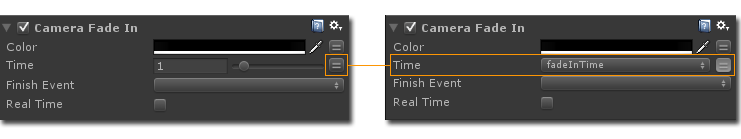
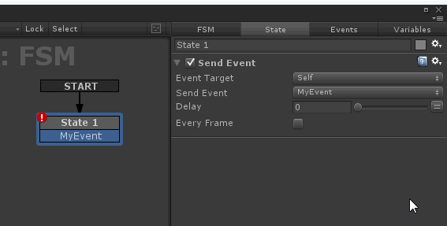
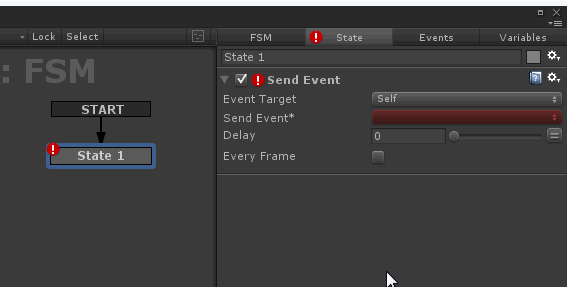

Action Editors are shown in the State Inspector.
Each Action has its own editor, but there are common elements:

- Enable/Disable Action.
- Help and Settings Menu.
- Action Parameters.
- Browse Button.
- Variable Toggle.
Help And Settings
The Help button opens online help for the Action.
The Settings Menu presents these options:
- Reset: Resets action parameters to default values.
- ----------------------------------------------------------
- Edit Name: Edit the displayed name to better describe the action.
- Auto Name (beta): Some actions can automatically create a descriptive name that uses parameter names etc. (experimental feature)
- Copy Selected Actions: Copy the selected actions to the clipboard.
- Paste Actions Before: Paste actions before the currently selected action.
- Paste Actions Replace: Paste actions and replace the selected action.
- Paste Actions After: Paste actions after the selected action.
- Move Action Up/Down: Move action up/down in list.
- Move Action To Top/Bottom: Move action to top/bottom of list.
- ----------------------------------------------------------
- Edit Script: Open the script in the default script editor.
- Select Script: Select the script asset in the Project Window.
- Find Script: Pings the script asset in the Project Window.
- ----------------------------------------------------------
- Find Action in Browser: Finds the action in the Action Browser.
- Remove Action: Removes the action from the state.
NOTE: Actions are executed from top to bottom.
Browse Button
Some parameters present a menu of potential values pulled from the game object, while still allowing you to type your own value.
Variable Toggle
Many parameters can use either an explicit value that you enter or can reference the value of a named variable. The Variable Toggle switched between these options.

Variable Selection Menu
You can assign a variable to a parameter using the variable popup menu. Variables are created in the Variables Manager.
NEW: Create a new variable in the variable menu:

Event Selection Menu
You can select an event from a popup menu. Events are created in the Events Manager.
NEW: Create a new event in the event menu:

See Also: